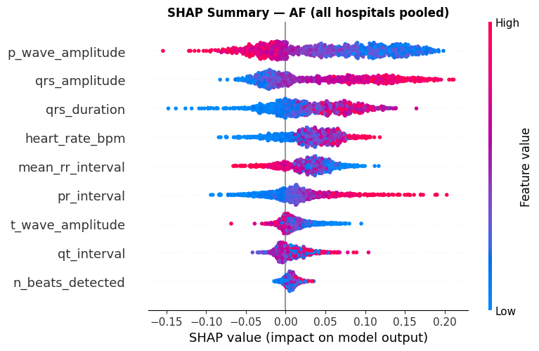

12-Lead ECG Diagnostic Studio
Upload WFDB clinical headers or select patient test recordings to perform real-time federated classification, XAI saliency mapping, and predictive uncertainty estimation.
Explainability (XAI) & Uncertainty Quantification
Explore 1D Grad-CAM salience activation maps, SHAP cardiological feature attributions, and Monte Carlo Dropout predictive uncertainty.
Monte Carlo Dropout Predictive Uncertainty
30 Stochastic PassesEvaluates model epistemic uncertainty by keeping dropout active at inference time to generate a distribution of prediction probabilities.
Cross-Hospital Explanation Consistency
Pairwise Cosine MatrixQuantifies whether explanations generated by different hospital client models agree when diagnosing the same physiological rhythm.
Our benchmark proves a statistically significant positive correlation (r = 0.684, p < 0.01) between predictive uncertainty and explanation inconsistency across hospital nodes.
SHAP Global & Local Cardiological Feature Attributions
Shapley Additive Explanations on clinical fiducial parameters: Mean RR interval, P-wave amplitude, QRS duration, PR interval, QT interval, and T-wave morphology.
Global Beeswarm Feature Impact

Federated Optimization & Client Topography
Evaluate multi-hospital collaborative training convergence, non-IID data distribution, and comparative performance across FedAvg, FedProx, and FedAdam.
Participating Clinical Nodes (5 Siloed Hospitals)
5 Hospital Nodes (84,207 Total Records)Chapman-Shaoxing
Shaoxing, ChinaCPSC-2018
China ChallengeGeorgia (Emory)
Atlanta, USANingbo First
Ningbo, ChinaPTB-XL
GermanyTraining Convergence (30 Rounds)
Micro/Macro F1-ScoreHospital Generalization Comparison
Test Partition F1Final Experimental Results Summary
| Optimization Algorithm | Chapman F1 | CPSC F1 | Georgia F1 | Ningbo F1 | PTB-XL F1 | Mean Macro F1 | Consistency Score |
|---|---|---|---|---|---|---|---|
| FedAdam (Adaptive Server) | 0.767 | 0.612 | 0.546 | 0.808 | 0.774 | 0.701 | 0.789 |
| FedProx (μ=0.001) | 0.748 | 0.364 | 0.635 | 0.789 | 0.752 | 0.658 | 0.768 |
| FedAvg (Standard) | 0.699 | 0.310 | 0.592 | 0.756 | 0.718 | 0.615 | 0.742 |
| Centralized Baseline (Upper Bound) | 0.814 | 0.781 | 0.745 | 0.808 | 0.822 | 0.794 | 0.812 |
Clinical Pathologies & Precautions Knowledge Base
Medical encyclopedia detailing all 12 target cardiac conditions, etiology, ECG diagnostic criteria, clinical risks, and preventive precautions.
About CardioSight & Project Team
Capstone Project under the School of Computer Science and Engineering (SCOPE), VIT-AP University.
Research Project Abstract
Multi-label cardiac arrhythmia detection using deep neural networks typically requires massive, centralized ECG datasets that compromise patient data privacy. We present CardioSight (ECG-FL-XAI), an uncertainty-aware, explainable federated learning framework trained across 5 geographically distributed clinical hospital nodes from the PhysioNet Challenge 2021.
Utilizing a 1D ResNet-34 backbone with adaptive federated optimizers (FedAvg, FedProx, FedAdam), we demonstrate that predictive uncertainty computed via Monte Carlo Dropout serves as a rigorous, verifiable safety metric correlated with inter-hospital explanation consistency (Grad-CAM and SHAP).
Project Authors
Syed Mohammad Samiul Ahmed
Team Member / Lead DeveloperShaik Mahammad Galeeb
Team Member / ResearcherShaik Khasim Basha
Team Member / Data EngineeringShaik Rehaman
Team Member / Model ValidationAcademic Mentorship & Institution
Dr. Lalitha Kumari P
Project Guide & Faculty Supervisor
School of Computer Science and Engineering (SCOPE)
VIT-AP University, Andhra Pradesh, India